转载来源
0x00 前言
说起分类算法，相信学过机器学习的同学都能侃上一二。
可是，你能够如数家珍地说出所有常用的分类算法，以及他们的特征、优缺点吗？比如说，你可以快速地回答下面的问题么:
- KNN 算法的优缺点是什么？
- Naive Bayes 算法的基本假设是什么？
- entropy loss 是如何定义的？
- 分类算法调参常用的图像又有哪些？
答不上来？别怕！一起来通过这篇文章回顾一下机器学习分类算法吧（本文适合已有机器学习分类算法基础的同学）。
机器学习是一种能从数据中学习的计算机编程科学以及艺术，就像下面这句话说得一样。
机器学习是使计算机无需显式编程就能学习的研究领域 —— 阿瑟・塞缪尔，1959年
不过还有一个更好的定义：
如果一个程序在使用既有的经验（E）执行某类任务（T）的过程中被认为是 “具备学习能力的”，那么它一定需要展现出：利用现有的经验（E），不断改善其完成既定任务（T）的性能（P）的特性 —— Tom Mitchell, 1997
例如，你的垃圾邮件过滤器是一个机器学习程序，通过学习用户标记好的垃圾邮件和常规非垃圾邮件示例，它可以学会标记垃圾邮件。系统用于学习的示例称为训练集。
在此案例中，任务（T）是标记新邮件是否为垃圾邮件，经验（E）是训练数据，性能度量（P） 需要定义。
你可以定义正确分类的电子邮件的比例为 P。这种特殊的性能度量称为准确度，这是一种有监督的学习方法，常被用于分类任务。
0x10 监督学习
在监督学习中，算法从有标记数据中学习。在理解数据之后，该算法通过将模式与未标记的新数据关联来确定应该给新数据赋哪种标签。
监督学习可以分为两类：分类和回归。
分类问题预测数据所属的类别。
例如垃圾邮件检测、客户流失预测、情感分析、犬种检测等。
回归问题根据先前观察到的数据预测数值。
例如房价预测、股价预测、身高-体重预测等。
0x20 分类问题
分类是一种基于一个或多个自变量确定因变量所属类别的技术。
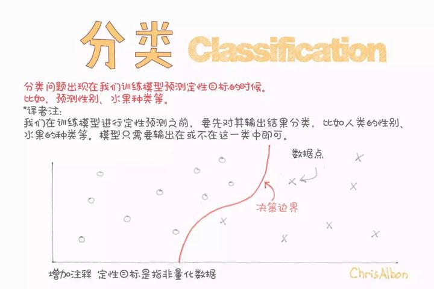
▲ 分类用于预测离散响应
0x21 逻辑回归
逻辑回归类似于线性回归，适用于因变量不是一个数值字的情况 （例如，一个 “是/否” 的响应）。
它虽然被称为回归，但却是基于根据回归的分类，将因变量分为两类。
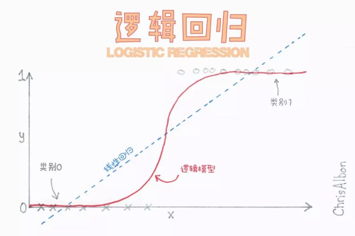
如上所述，逻辑回归用于预测二分类的输出。
例如，如果信用卡公司构建一个模型来决定是否通过向客户的发行信用卡申请，它将预测客户的信用卡是否会 “违约”。
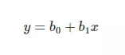
首先对变量之间的关系进行线性回归以构建模型，分类的阈值假设为 0.5。
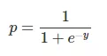
然后将 Logistic 函数应用于回归分析，得到两类的概率。
该函数给出了事件发生和不发生概率的对数。
最后，根据这两类中较高的概率对变量进行分类。
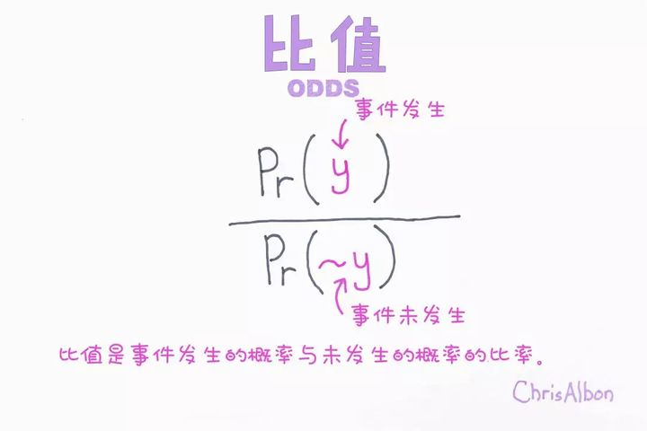
0x22 K-近邻算法（K-NN）
K-NN 算法是一种最简单的分类算法，通过识别被分成若干类的数据点，以预测新样本点的分类。
它是一种非参数的算法，是 “懒惰学习” 的著名代表，它根据相似性（如，距离函数）对新数据进行分类。
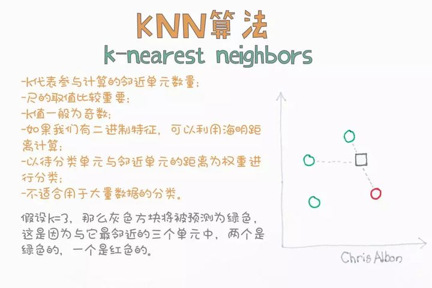
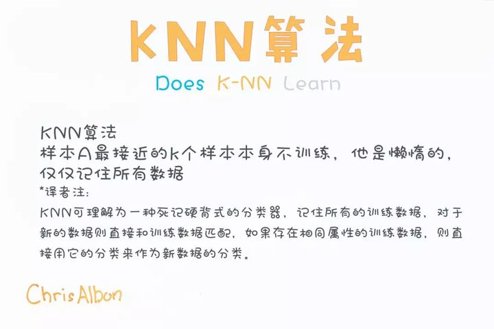
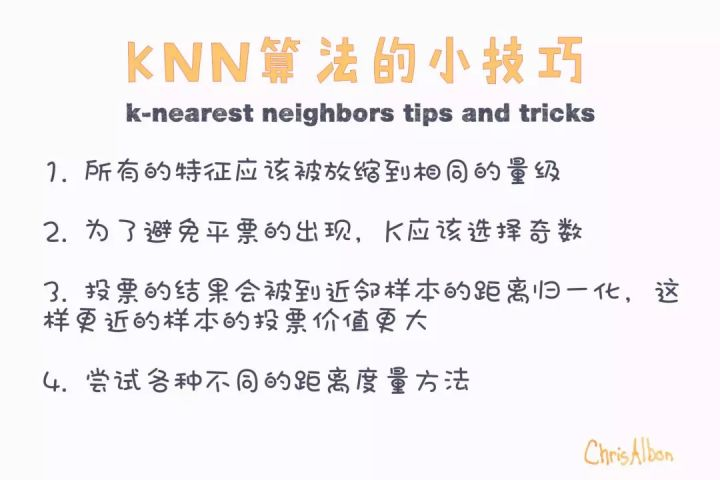
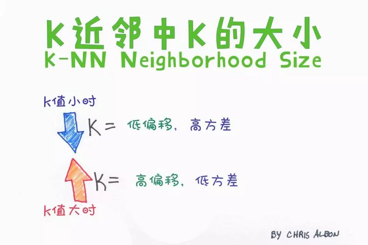
K-NN 能很好地处理少量输入变量（p）的情况，但当输入量非常大时就会出现问题。
0x23 支持向量机（SVM）
支持向量机既可用于回归也可用于分类。它基于定义决策边界的决策平面。
决策平面（超平面）可将一组属于不同类的对象分离开。
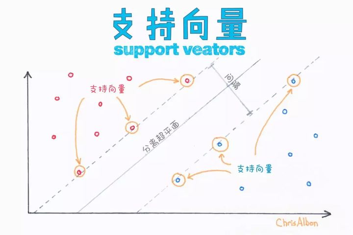
在支持向量的帮助下，SVM 通过寻找超平面进行分类，并使两个类之间的边界距离最大化。
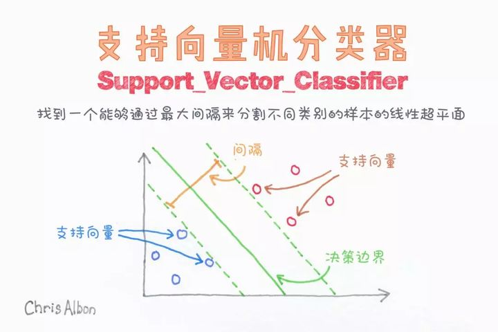
SVM 中超平面的学习是通过将问题转化为使用一些某种线性代数转换问题来完成的。
上图的例子是一个线性核，它在每个变量之间具有线性可分性。
对于高维数据，使用可使用其他核函数，但高维数据不容易进行分类。具体方法将在下一节中阐述。
0x24 核支持向量机
核支持向量机将核函数引入到 SVM 算法中，并将其转换为所需的形式，将数据映射到可分的高维空间。
核函数的类型包括：
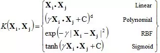
- 前文讨论的就是线性 SVM。
- 多项式核中需要指定多项式的次数。它允许在输入空间中使用曲线进行分割。
- 径向基核（radial basis function, RBF）可用于非线性可分变量。使用平方欧几里德距离，参数的典型值会导致过度拟合。sklearn 中默认使用 RBF。
- 类似于与逻辑回归类似，sigmoid 核用于二分类问题。
0x25 径向基核（RBF：Radial Basis Function）
RBF 核支持向量机的决策区域实际上也是一个线性决策区域。
RBF 核支持向量机的实际作用是构造特征的非线性组合，将样本映射到高维特征空间，再利用线性决策边界分离类。
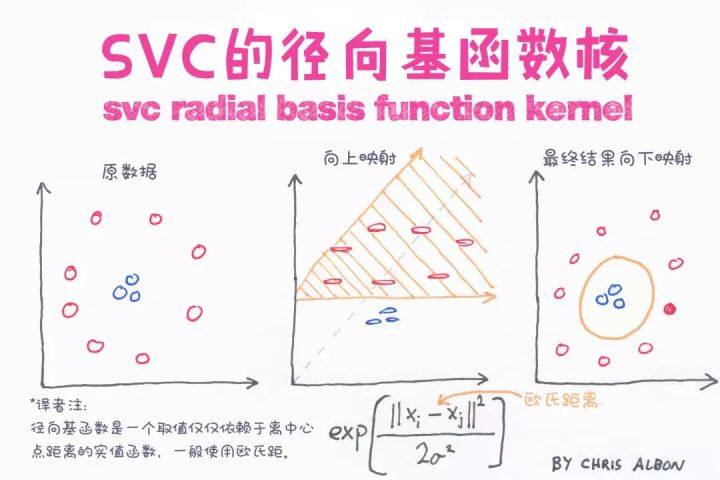
因此，可以得出经验是：对线性问题使用线性支持向量机，对非线性问题使用非线性核函数，如 RBF 核函数。
0x26 朴素贝叶斯
朴素贝叶斯分类器建立在贝叶斯定理的基础上，基于特征之间互相独立的假设（假定类中存在一个与任何其他特征无关的特征）。
即使这些特征相互依赖，或者依赖于其他特征的存在，朴素贝叶斯算法都认为这些特征都是独立的。这样的假设过于理想，朴素贝叶斯因此而得名。
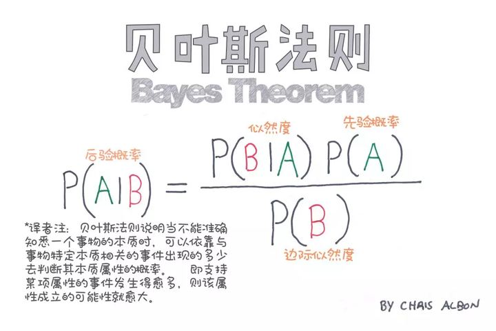
在朴素贝叶斯的基础上，高斯朴素贝叶斯根据二项（正态）分布对数据进行分类。
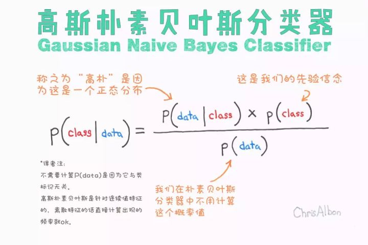
P(class|data)表示给定特征（属性）后数据属于某类（目标）的后验概率。给定数据，其属于各类的概率大小就是我们要计算的值。P(class)表示某类的先验概率。P(data|class)表示似然，是指定类别时特征出现的概率。P(data)表示特征或边际似然的先验概率。
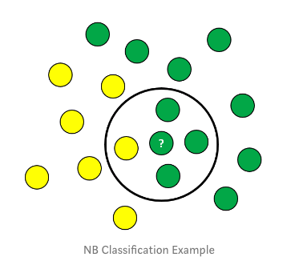
例如套到上图例子的步骤：
- 计算先验概率
P(class)=类中数据点的数量 / 观测值的总数量 P(yellow)=10/17 P(green)=7/17 - 计算边际似然
P(data)=与观测值相似的数据点的数量 / 观测值的总数量 P(?)=4/17（该值用于检查各个概率） - 计算似然
P(data/class)=类中与观测值相似的数量 / 类中点的总数量 P(?/yellow)=1/7 P(?/green)=3/10 - 计算各类的后验概率
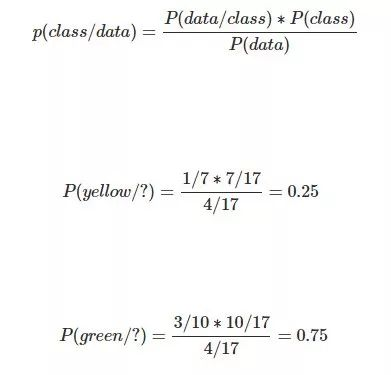
- 分类
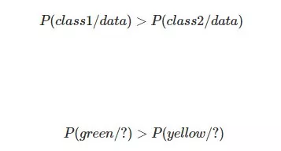
某一点归于后验概率高的类别，因为从上可知其属于绿色类的概率是 75%。根据其 75% 的概率这个点属于绿色类。
多项式、伯努利朴素贝叶斯是计算概率的其他模型。朴素贝叶斯模型易于构建，不需要复杂的参数迭代估计，这使得它对非常大的数据集特别有用。
0x27 决策树分类
决策树以树状结构构建分类或回归模型。
它通过将数据集不断拆分为更小的子集来使决策树不断生长，最终长成具有决策节点（包括根节点和内部节点）和叶节点的树。
最初决策树算法它采用采用 Iterative Dichotomiser 3（ID3）算法来确定分裂节点的顺序。
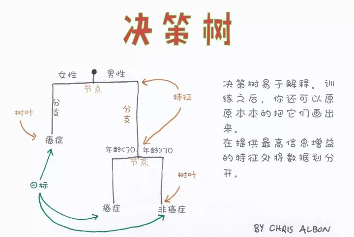
信息熵和信息增益用于被用来构建决策树。
【信息熵】
信息熵是衡量元素无序状态程度的一个指标，即衡量信息的不纯度。
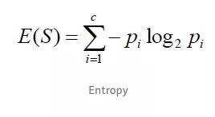
信息熵是衡量元素的无序状态的程度的一个指标，或者说，衡量信息的不纯度。
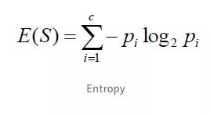
【信息增益】
信息增益测量独立属性间的信息熵的变化。它试图估计每个属性本身包含的信息，构造决策树就是要找到具有最高信息增益的属性（即纯度最高的分支）。
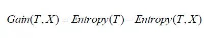
其中 Gain(T, X) 是特征X的信息增益。 Entropy(T) 是整个集合的信息熵，第二项 Entropy(T, X) 是特征 X 的信息熵。
采用信息熵进行节点选择时，通过对该节点各个属性信息增益进行排序，选择具有最高信息增益的属性作为划分节点，过滤掉其他属性。
决策树模型存在的一个问题是容易过拟合。因为在其决策树构建过程中试图通过生成长一棵完整的树来拟合训练集，因此却降低了测试集的准确性。
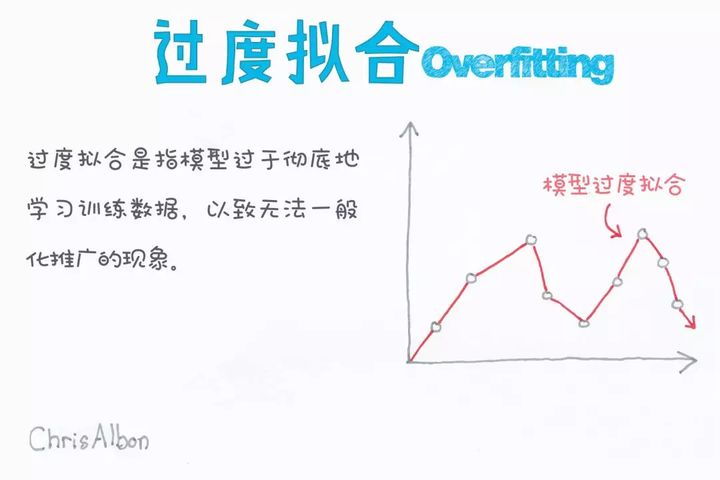
▲ 通过剪枝技术可以减少小决策树的过拟合问题
0x28 分类的集成算法
集成算法是一个模型组。
从技术上说，集成算法是单独训练几个有监督模型，并将训练好的模型以不同的方式进行融合，从而达到最终的得预测结果。
集成后的模型比其中任何一个单独的模型都有更高的预测能力。
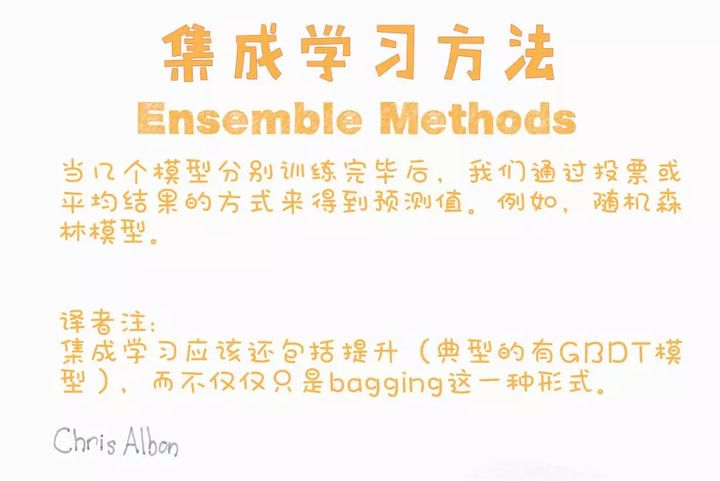
0x29 随机森林分类器
随机森林分类器是一种基于装袋（bagging）的集成算法，即自举助聚合法（bootstrap aggregation）。
集成算法结合了多个相同或不同类型的算法来对对象进行分类（例如，SVM 的集成，基于朴素贝叶斯的集成或基于决策树的集成）。
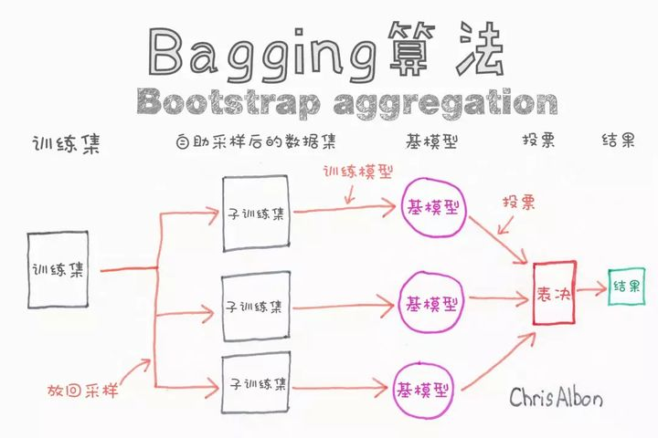
集成的基本思想是算法的组合提升了最终的结果。
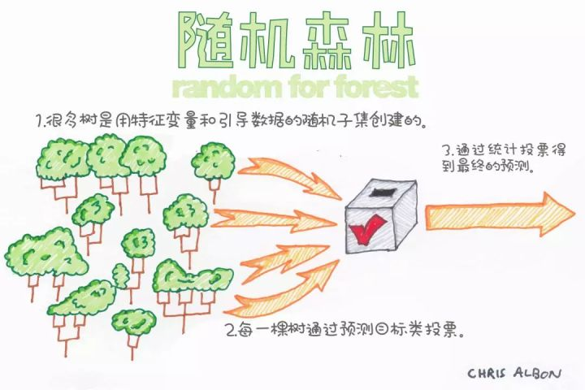
深度太大的决策树容易受过拟合的影响。但是随机森林通过在随机子集上构建决策树防止过拟合，主要原因是它会对所有树的结果进行投票的结果是所有树的分类结果的投票，从而消除了单棵树的偏差。
随机森林在决策树生增长的同时为模型增加了额外的随机性。它在分割节点时，不是搜索全部样本最重要的特征，而是在随机特征子集中搜索最佳特征。这种方式使得决策树具有多样性，从而能够得到更好的模型。
0x2A 梯度提升分类器
梯度提升分类器是一种提升集成算法。提升（boosting）算法是为了减少偏差而对弱分类器的而进行的一种集成方法。与装袋（bagging）方法构建预测结果池不同，提升算法是一种分类器的串行方法，它把每个输出作为下一个分类器的输入。
- 通常，在装袋算法中，每棵树在原始数据集的子集上并行训练，并用所有树预测结果的均值作为模型最终的预测结果；
- 而梯度提升模型，采用串行方式而非并行模式获得预测结果。每棵决策树预测前一棵决策树的误差，因而使误差获得提升。
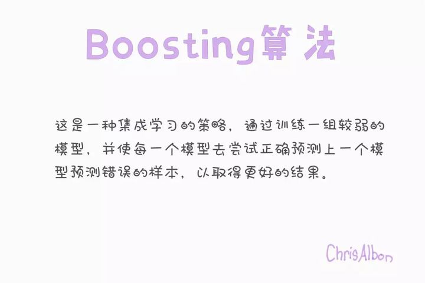
梯度提升树的工作流程：
- 使用浅层决策树初始化预测结果。
- 计算残差值（实际预测值）。
- 构建另一棵浅层决策树，将上一棵树的残差作为输入进行预测。
- 用新预测值和学习率的乘积作为最新预测结果，更新原有预测结果。
- 重复步骤
2-4，进行一定次数的迭代（迭代的次数即为构建的决策树的个数）。
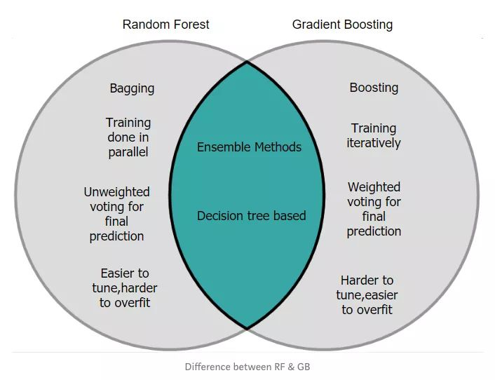
0x30 分类器的性能
0x31 混淆矩阵
混淆矩阵是一张表，这张表通过对比已知分类结果的测试数据的预测值和真实值表来描述衡量分类器的性能。
在二分类的情况下，混淆矩阵是展示预测值和真实值四种不同结果组合的表。
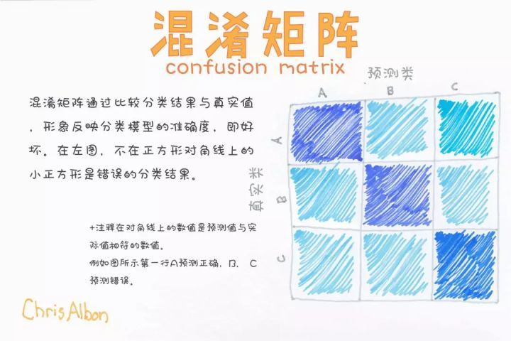
多分类问题的混淆矩阵可以帮助你确认错误模式。
对于二元分类器：
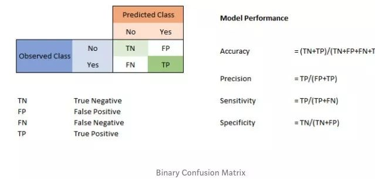
【假正例 & 假负例】
假正例和假负例用来衡量模型预测的分类效果。假正例是指模型错误地将负例预测为正例。假负例是指模型错误地将正例预测为负例。主对角线的值越大（主对角线为真正例和真负例），模型就越好；副对角线给出模型的最差预测结果。
【假正例】
下面给出一个假正例的例子。比如：模型将一封邮件分类为垃圾邮件（正例），但这封邮件实际并不是垃圾邮件。这就像一个警示，错误如果能被修正就更好，但是与假负例相比，它并不是一个严重的问题。
译者注：个人观点，这个例子举的不太好，对垃圾邮件来说，相比于错误地将垃圾邮件分类为正常邮件（假负例），将正常邮件错误地分类为垃圾邮件（假正例）是更严重的问题。
假正例（I 型错误） —— 原假设正确而拒绝原假设。
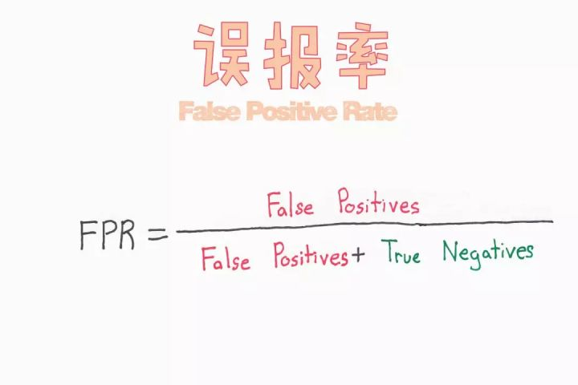
【假负例】
假负例的一个例子。例如，该模型预测一封邮件不是垃圾邮件（负例），但实际上这封邮件是垃圾邮件。这就像一个危险的信号，错误应该被及早纠正，因为它比假正例更严重。
假负例（II 型错误） —— 原假设错误而接受原假设。
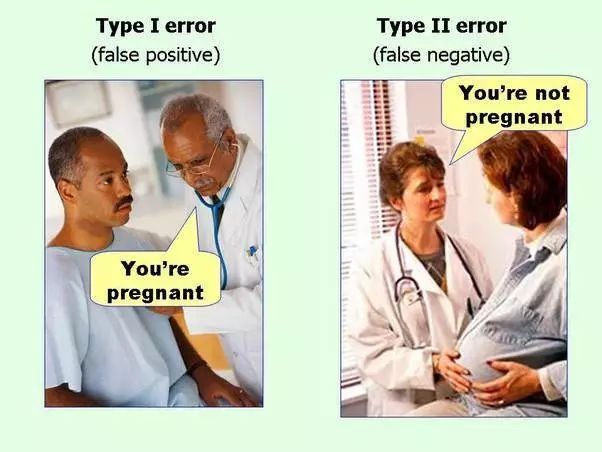
上图能够很容易地说明上述指标。左图男士的测试结果是假正例因为男性不能怀孕；右图女士是假负例因为很明显她怀孕了。
从混淆矩阵，我们能计算出准确率、精度、召回率和 F-1 值。
【准确率】
准确率是模型预测正确的部分。
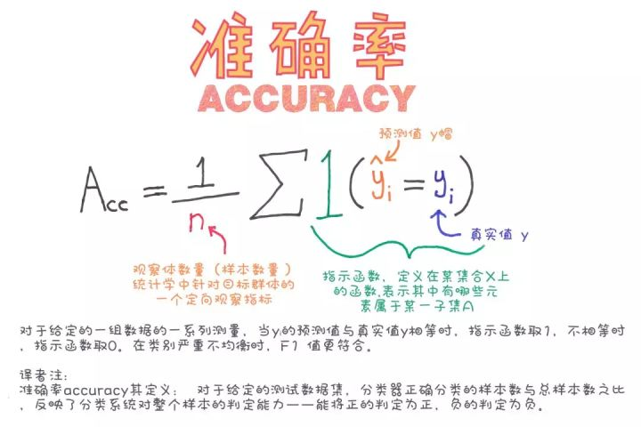
准确率的公式为：
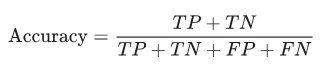
当数据集不平衡，也就是正样本和负样本的数量存在显著差异时，单独依靠准确率不能评价模型的性能。精度和召回率是衡量不平衡数据集的更好的指标。
【精度】
精度是指在所有预测为正例的分类中，预测正确的程度为正例的效果。
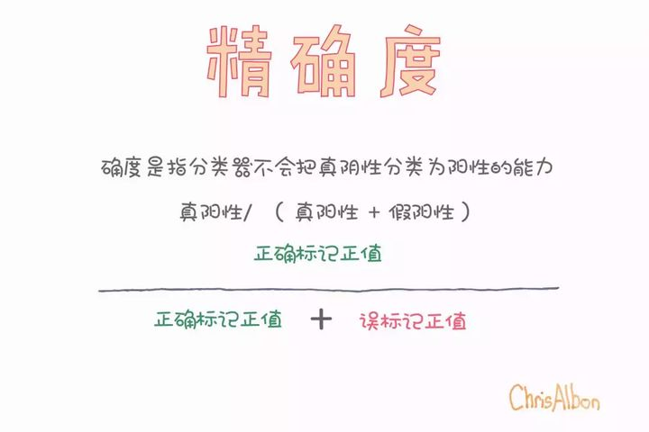
▲精度越高越好
【召回率】
召回率是指在所有预测为正例（被正确预测为真的和没被正确预测但为真的）的分类样本中，召回率是指预测正确的程度。它，也被称为敏感度或真正率（TPR）。
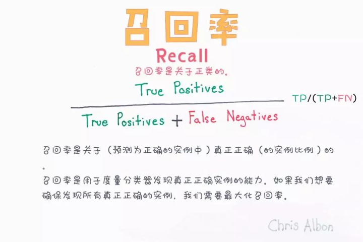
▲召回率越高越好
【F-1 值】
通常实用的做法是将精度和召回率合成一个指标 F-1 值更好用，特别是当你需要一种简单的方法来衡量两个分类器性能时。F-1 值是精度和召回率的调和平均值。
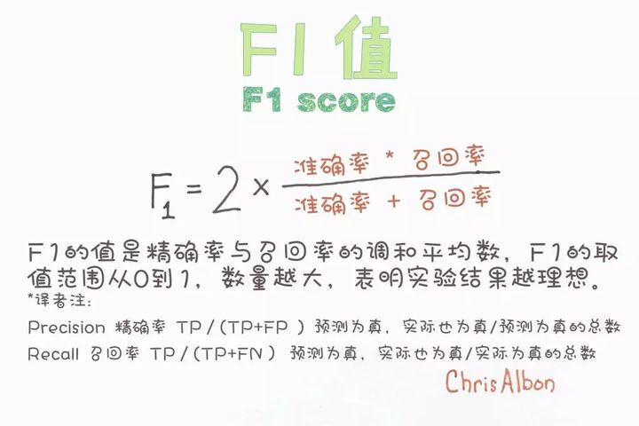
普通的通常均值将所有的值平等对待，而调和平均值给予较低的值更高的权重，从而能够更多地惩罚极端值。所以，如果精度和召回率都很高，则分类器将得到很高的 F-1 值。
0x32 接受者操作曲线（ROC）和曲线下的面积（AUC）
ROC 曲线是衡量分类器性能的一个很重要指标，它代表模型准确预测的程度。ROC 曲线通过绘制真正率和假正率的关系来衡量分类器的敏感度。
- 如果分类器性能优越，则真正率将增加，曲线下的面积会接近于 1。
- 如果分类器类似于随机猜测，真正率将随假正率线性增加。
AUC 值越大，模型效果越好。
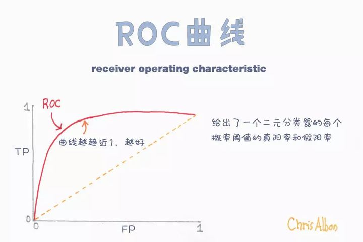
【累积精度曲线】
CAP 代表一个模型沿 y 轴为真正率的累积百分比与沿 x 轴的该分类样本累积百分比。
CAP 不同于接受者操作曲线（ROC，绘制的是真正率与假正率的关系）。与 ROC 曲线相比，CAP 曲线很少使用。
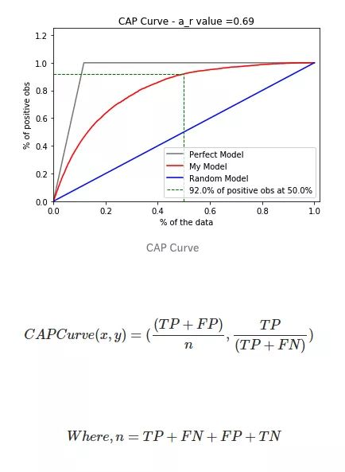
以考虑一个预测客户是否会购买产品的模型为例，如果随机选择客户，他有 50% 的概率会购买产品。
客户购买产品的累积数量会线性地增长到对应客户总量的最大值，这个曲线称为 CAP 随机曲线，为上图中的蓝色线。
而一个完美的预测，准确地确定预测了哪些客户会购买产品，这样，在所有样本中只需选择最少的客户就能达到最大购买量。
这在 CAP 曲线上产生了一条开始陡峭一旦达到最大值就会维持在1的折线，称为 CAP 的完美曲线，也被称为理想曲线，为上图中灰色的线。
最后，一个真实的模型应该能尽可能最大化地正确预测，接近于理想模型曲线。